Apprends à méditer et éveille ton esprit : 146 méditations guidées pour t'endormir, respirer et t'apaiser, dont 17 mondes immersifs, un compagnon dragon et un journal de ton évolution. Tout s'écoute hors ligne une fois téléchargé, sans jamais rien payer.
Apprendre la méditation et soutenir ton développement spirituel. C'est tout. Pas d'abonnement caché, pas de publicité, pas de compte à créer, pas de données collectées : tu ouvres l'app, et tu respires.

Des premiers pas du débutant aux explorations les plus profondes : sommeil, respiration, calme, pleine conscience… Chaque catégorie est un univers, avec son illustration, sa voix et son ambiance.

Huit séances pour poser les fondations : balayage corporel, souffle, pensées, cinq sens, yeux ouverts, première méditation silencieuse.
8 méditations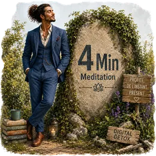
De courtes méditations, disponibles hors ligne une fois téléchargées : trouve le calme ou recentre-toi en quatre minutes.
11 méditations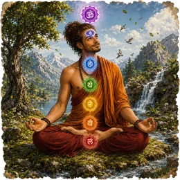
Souffle, chakras, sons, relaxations profondes et endormissement.
14 méditations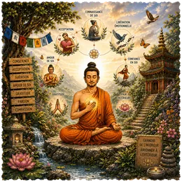
Amour, gratitude, compassion, pardon — cultiver le cœur intérieur.
8 méditations
Rencontre ce dont tu t'es détourné, avec douceur.
10 méditations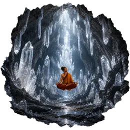
Temples, forêts, montagnes, océans, feu.
7 méditations
Rencontre les voix qui marchent avec toi.
5 méditations
Retrouvailles, mémoires transgénérationnelles, accès aux annales : le voyage vers ce qui nous dépasse.
3 méditations
Quête de vision, feu des anciens, cercle de protection, objet de pouvoir : quatre voyages de transe chamanique.
4 méditations
Sur les pas des bodhisattvas : sagesse, compassion et clarté.
8 méditations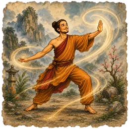
Chaleur des mains, petite circulation, arbre immobile : le corps en mouvement intérieur.
4 méditations
Entraîner l’œil intérieur : voir, entendre et toucher en imagination.
6 méditations
Un voyage complet en une séance : un lieu, une époque, une histoire.
4 méditations
Le point entre les sourcils, l’image qui apparaît seule, le mandala qui se construit.
5 méditations
Voyage au-delà. Étoiles, vide, l'immensité intérieure.
2 méditations
Bibliothèque infinie, corps endormi et esprit éveillé, spirale, rêve éveillé dirigé, vide fertile, soi du futur.
7 méditationsVoir les 19 catégories et toutes les séances →
Trois catégories dédiées aux techniques de transe, au micro-détachement et aux voyages astraux — pour les explorateurs.

Sept voyages en transe : descente progressive, mondes d’en bas et d’en haut, vies passées, contrat de l’âme, couloir aux mille portes, talents oubliés.
7 méditations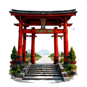
Cinq micro-gestes de séparation à pratiquer avant toute sortie complète : l’aimant au plafond, le petit décalage, le point derrière la tête, le toboggan, s’asseoir fantôme.
5 méditations
Onze protocoles de sortie : flottement, redressement, membres intérieurs, corde, chute imaginaire, cible, rencontre, déplacement, vision, visualisation du double.
11 méditationsUn monde = une méditation immersive complète (13 à 20 minutes selon le monde), avec son décor, sa lumière, ses sons et son récit. Télécharge-le une fois, et médite hors ligne où que tu sois.

20 min · sécurité, sacré

13 min · calme divin, transcendance
17 min · clarté, renouveau

19 min · émerveillement, infini

15 min · ancrage, primal
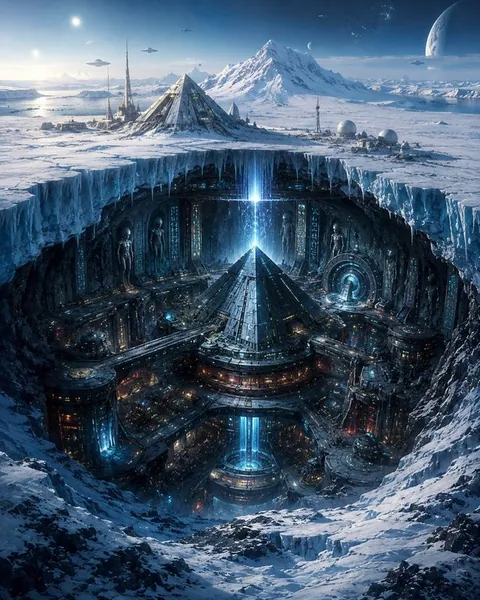
16 min · silence, mystère
20 min · liberté, sécurité
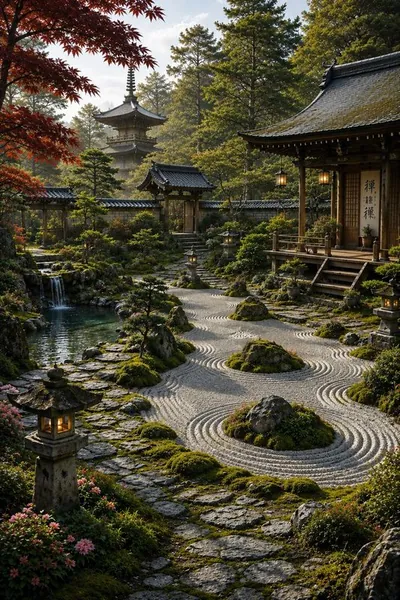
18 min · paix, équilibre
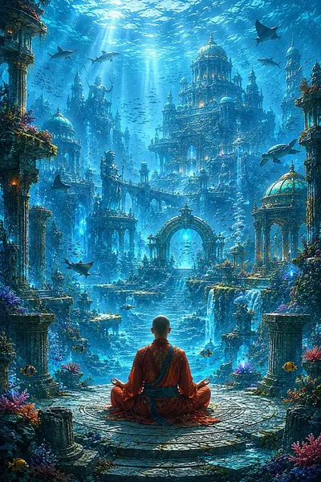
18 min · flux, profondeur

18 min · clarté, sagesse

14 min · sagesse, introspection

13 min · immobilité, solitude

18 min · connexion, énergie vitale

19 min · mystère, exploration

17 min · émerveillement, imagination

15 min · introspection, transcendance
15 min · protection, guidance
Oracle, sanctuaires, journaux, minuteur, alarme : au-delà des méditations guidées, l'app devient peu à peu ton carnet de route intérieur.
Crée tes lieux intérieurs — forêt, grotte, temple, île… — et reviens y méditer.
Note les guides rencontrés en méditation : leur type, leurs messages, leurs réapparitions.
Les objets reçus en voyage intérieur, gardés et décrits, avec leur sens pour toi.
Un journal personnel structuré : rêves, gratitude, émotions, signes… et un historique de chaque méditation avec tes impressions.
Ton compagnon grandit avec ta pratique (11 stades), et son île évolue avec lui — rocher, prairie, arbre, cascade, cristal, temple, cosmos.
Des tampons à collectionner : méditations, mondes, guides, séries, badges d'assiduité.
Dis comment tu te sens : l'Oracle bat les cartes et en retourne trois, trois méditations choisies pour ce moment. En dessous, des conseils du jour nés de ce que tu écris dans l'app.
1 méditation = 1 point, 1 entrée = 1 point. La moitié des méditations et tous les mondes sont libres dès le départ ; tout est ouvert à 20 points.
Trouve une méditation par mot-clé — sommeil, stress, confiance, enfant intérieur, chakra…
Un doux rappel quotidien ou certains jours seulement, à l'heure que tu veux.
Six crans, de 0,75× à 1×, hauteur préservée. Et un rythme personnel pour les pauses entre les phrases.
Sous-bois, vagues, torrent, flûte chinoise… de vrais enregistrements pendant la séance, à ton volume.
Une bibliothèque illustrée pour débuter : postures, souffle, attention, respiration, avec des schémas dans ta langue.
Télécharge tes méditations et tes mondes : ils jouent sans réseau, pour toujours.
Fais défiler pour parcourir l’application de méditation telle qu’elle est sur ton téléphone — chaque écran est légendé.
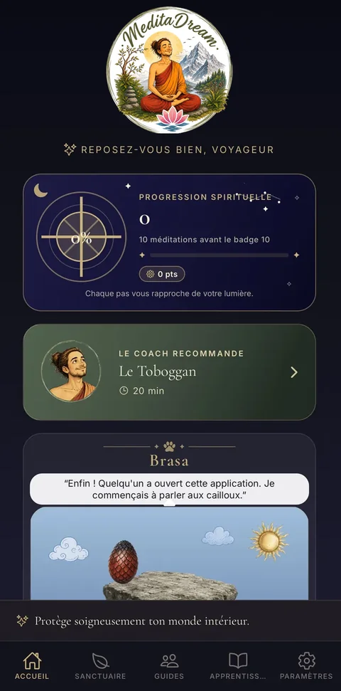
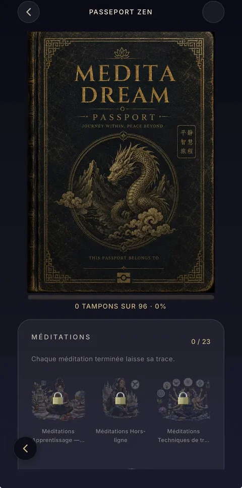
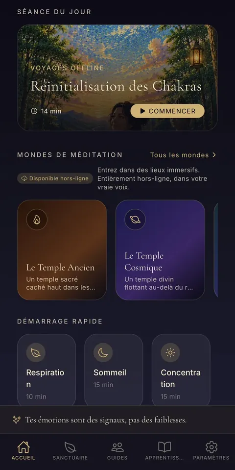
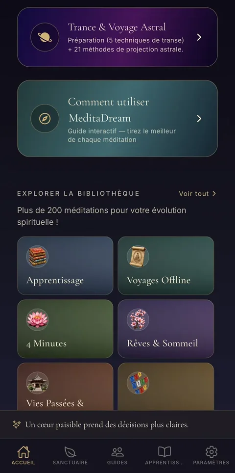
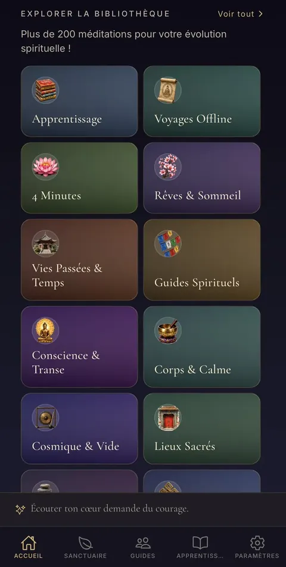
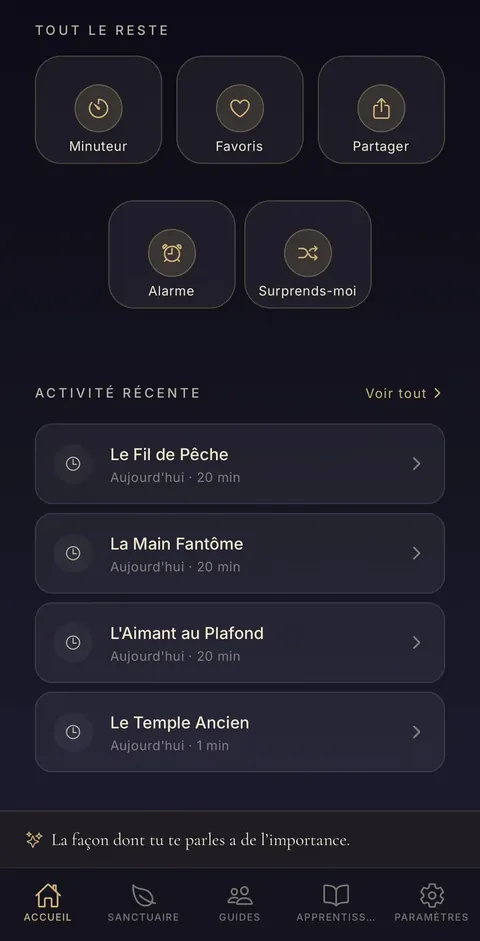
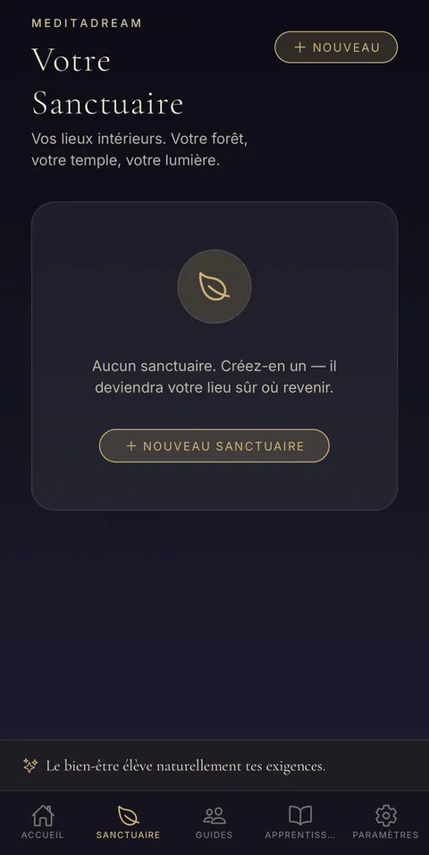
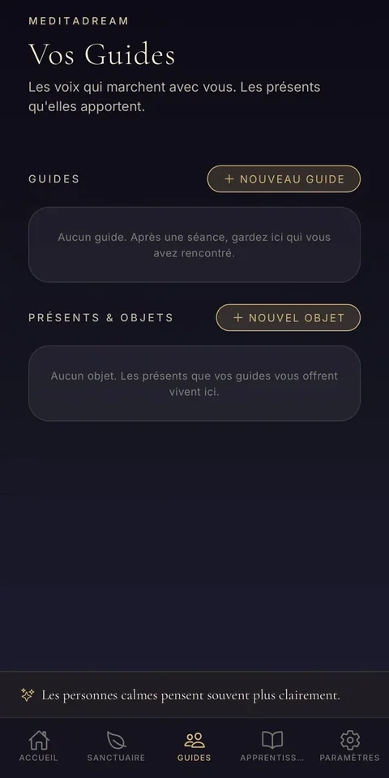
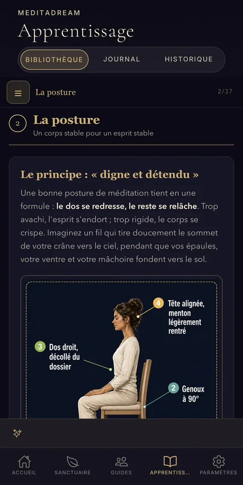
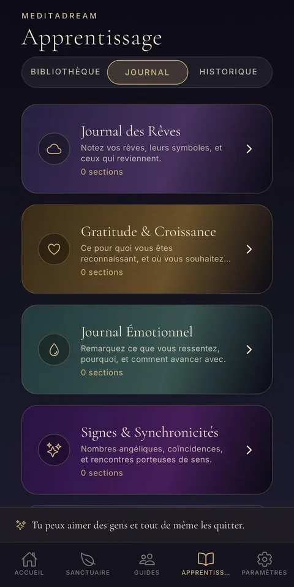
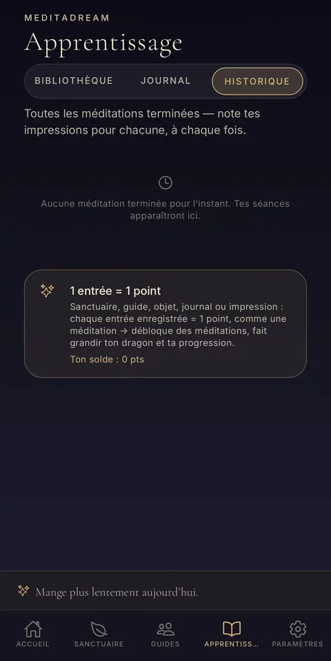
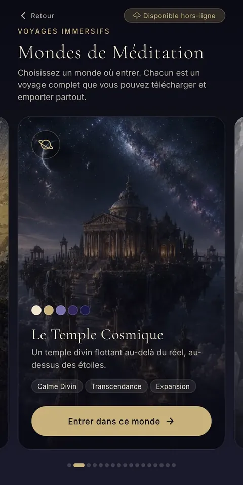
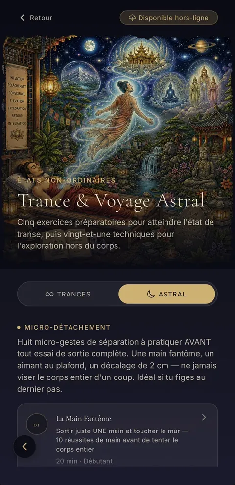
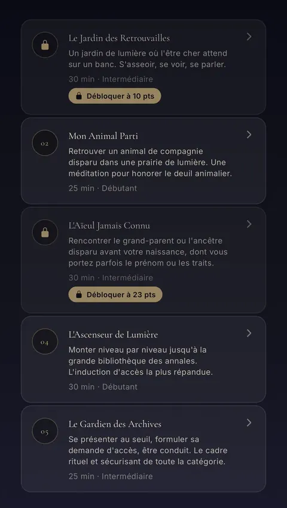
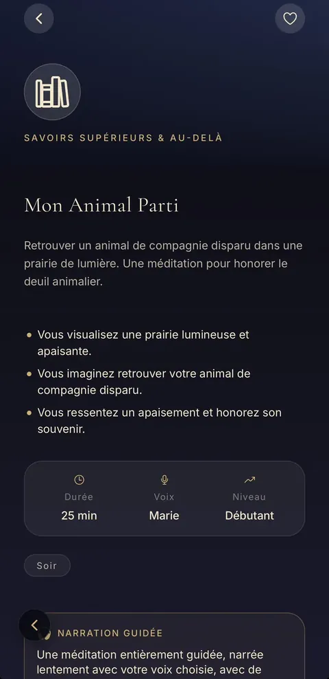
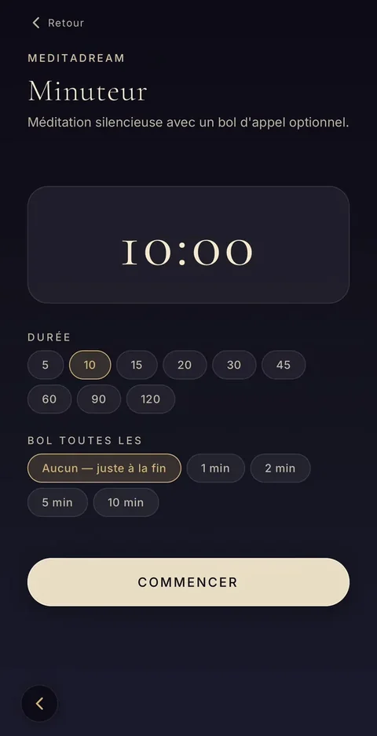
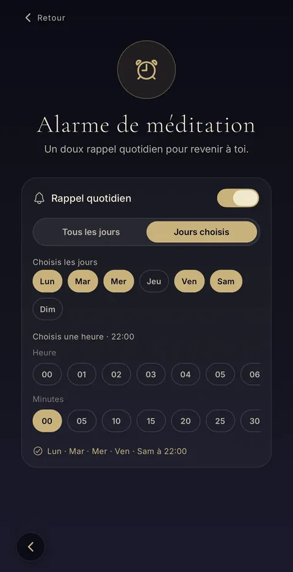
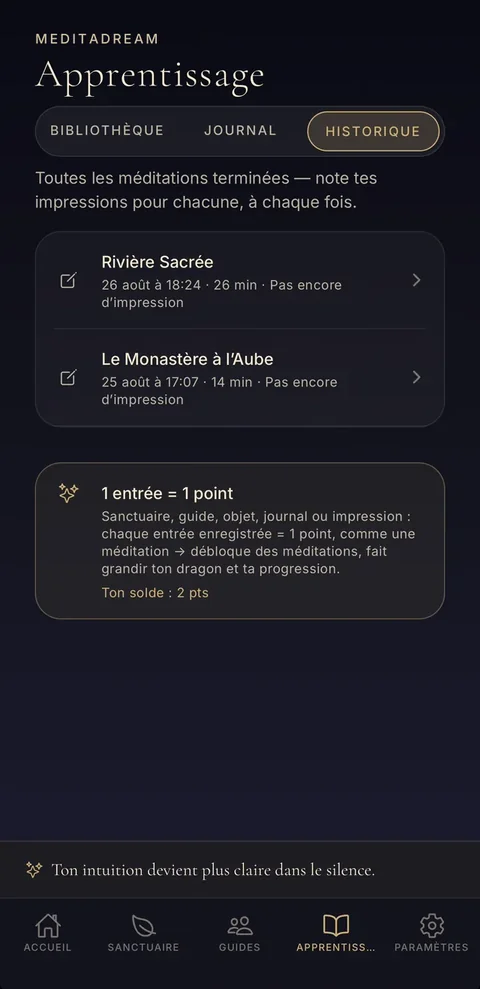
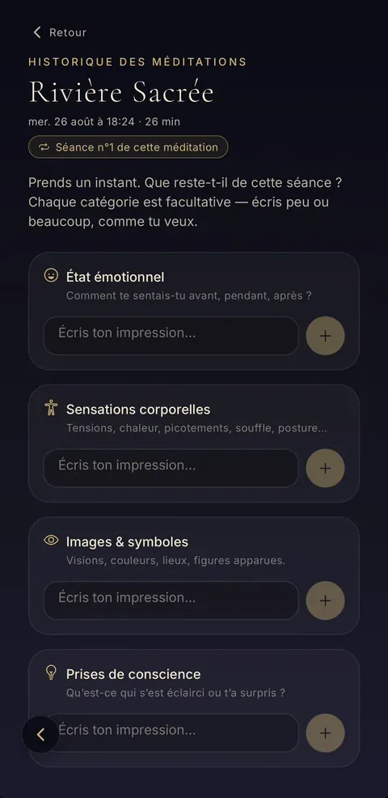
Deux minutes pour voir les méditations guidées, les mondes immersifs et les journaux en action.
Oui — et pour toujours. Aucune méditation payante, aucun abonnement, aucune publicité, aucun achat intégré. C'est un choix : la méditation doit rester accessible à tous.
Non. Aucune inscription, aucun email demandé. Tu installes l'application, tu choisis ta langue et ta voix, et tu commences ta première méditation guidée. Tes données restent sur ton téléphone.
Oui : chaque méditation et chaque monde se téléchargent une fois, puis s'écoutent partout — en avion, en montagne, dans le métro. Seule la première écoute demande une connexion.
Oui, toute une catégorie Corps, calme & sommeil : méditations guidées pour s'endormir, relaxations profondes, et un journal des rêves pour le réveil. → Lire : Méditation pour dormir
Oui : la catégorie Apprentissage t'apprend à méditer pas à pas — posture, respiration, attention — en séances courtes, et la catégorie 4 Minutes offre des pauses express. → Lire : Apprendre à méditer, le guide du débutant
Français, anglais et espagnol, avec deux voix de synthèse par langue. Chaque méditation est narrée dans ta langue.
Bientôt gratuite sur l’App Store et Google Play. Aucune inscription, aucun abonnement : tu installes, et tu respires.
MeditaDream est un outil d'apprentissage et de bien-être. Il ne constitue ni un avis médical, ni un diagnostic, ni un traitement, et ne remplace jamais l'accompagnement d'un professionnel.
 MeditaDream
MeditaDream